| Requisitos para uso de Itens e Equipamentos | ||||
|---|---|---|---|---|
| Inferior | Normal | Superior | Excepcional | Elite |
| Nível 1 | Nível 3 | Nível 5 | Nível 7 | Nível 9 |
| Equipamentos | |||||
|---|---|---|---|---|---|
| Qualidade | Inferior | Normal | Superior | Excepcional | Elite |
| Arma | +4 Ataque | +8 Ataque | +12 Ataque | +16 Ataque | +20 Ataque |
| Cajado | +4 Ataque M | +8 Ataque M | +12 Ataque M | +16 Ataque M | +20 Ataque M |
| Escudo (50%) | 4 Bloqueio | 8 Bloqueio | 12 Bloqueio | 16 Bloqueio | 20 Bloqueio |
| Armadura Leve | +5 Proteção +1 Esquiva | +10 Proteção +2 Esquiva | +15 Proteção +3 Esquiva | +20 Proteção +4 Esquiva | +25 Proteção +5 Esquiva |
| Armadura Média | 10 Proteção | 20 Proteção | 30 Proteção | 40 Proteção | 50 Proteção |
| Armadura Pesada | 20 Proteção -1 Esquiva | 30 Proteção -2 Esquiva | 40 Proteção -3 Esquiva | 50 Proteção -4 Esquiva | 60 Proteção -5 Esquiva |
| • O jogador pode escolher qualquer tipo de arma comum no momento da compra; • Escudos requerem Perícia com Escudo para serem utilizados. • Armaduras Pesadas requerem Força mínima de 1/2/3/4/5 para serem equipadas. | |||||
| Amuletos | ||
|---|---|---|
| Amuletos Mágicos | ||
| 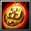 | Pedra da Vitalidade | Vida +8 |
| 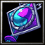 | Talismã Místico | Mana +5 |
| 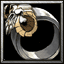 | Anel da Precisão | Precisão +1 |
| 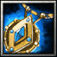 | Talismã da Evasão | Esquiva +1 |
| 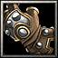 | Manopla Reforçada | Ataque +3, Ataque Mágico +3 |
| 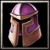 | Elmo de Batalha | Proteção +5 |
| 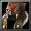 | Capuz Xamânico | Resistências +10 |
| Amuletos Raros | ||
| 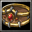 | Cinturão do Campeão | Força +1 |
| 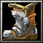 | Botas de Quel'Thalas | Destreza +1 |
| 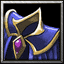 | Manto Arcano | Inteligência +1 |
| 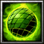 | Esfera Verdejante | Vitalidade +1 |
| 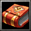 | Tomo Místico | Habilidade Especial (aleatória) +1 |
| Amuletos Lendários | ||
| O Desolador | 10% Acerto Crítico |
| 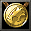 | Medalhão da Coragem | Reduz em 1 todo dano recebido |
| 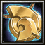 | Astrolábio | Reduz em 1 PM o custo de suas habilidades durante o combate |
| 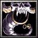 | Berrante Satânico | 10% Roubo de Vida |
| 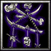 | Mandala de Ossos | 10% Vampirismo mágico |
| 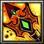 | Malevolência | Silencia um inimigo por 1 rodada |
| Coração e Alma | +10% Vida e Mana máximas | |
| 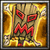 | Totem Shamânico | 10% Acerto Crítico com magias |
| Mente Sobre a Matéria | 30% do dano é deduzido da mana antes da vida |
| 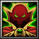 | Monóculo | 5 Precisão |
| 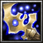 | Relíquia Sagrada | +25% em Curas e Escudos conjurados |
| 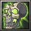 | Coração de Lich | +1d6 de Ataque contra mortos-vivos |
| • Cada personagem pode equipar até 2 amuletos. | ||
| Consumíveis | |||||
|---|---|---|---|---|---|
| 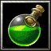 Poções Mágicas | |||||
| Qualidade | Inferior | Normal | Superior | Excepcional | Elite |
| Cura | 10 PVs | 20 PVs | 30 PVs | 40 PVs | 50 PVs |
| Mana | 5 PMs | 10 PMs | 15 PMs | 20 PMs | 25 PMs |
| Explosiva | 10 Ataque | 20 Ataque | 30 Ataque | 40 Ataque | 50 Ataque |
| Corrosiva | Reduz a armadura do alvo em 50% até o fim do combate | ||||
| Venenosa | Envenena o alvo, causando 10% da Vida máxima como dano no final de seu turno | ||||
| Fumaça | Reduz em 50% a Precisão do oponente alvo | ||||
| Gosmenta | Reduz em 50% a chance de Esquiva e Bloqueio do oponente alvo | ||||
| Recuperação | Remove a maioria das condições negativas | ||||
| • Poções consomem uma ação para serem utilizadas. • O uso de poções não consome mana. • Poções podem ser arremessadas, mas exigem um teste bem-sucedido de Precisão para acertarem o alvo. | |||||
| 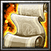 Pergaminhos Mágicos | |||||
| Qualidade | Inferior | Normal | Superior | Excepcional | Elite |
| Ventos Revigorantes | 10 PVs | 20 PVs | 30 PVs | 40 PVs | 50 PVs |
| Explosão de Chamas | 6 Ataque | 12 Ataque | 18 Ataque | 24 Ataque | 30 Ataque |
| Barricada | 12 PVs | 24 PVs | 36 PVs | 48 PVs | 60 PVs |
| Armadura Fantasmagórica | 10 Resistência | 20 Resistência | 30 Resistência | 40 Resistência | 50 Resistência |
| Forma Demoníaca | Ataque +1d6 | Ataque +2d6 | Ataque +3d6 | Ataque +4d6 | Ataque +5d6 |
| Aprimoraramento Arcano | AtaqueM +1d6 | AtaqueM +2d6 | AtaqueM +3d6 | AtaqueM +4d6 | AtaqueM +5d6 |
| Onda Debilitante | Ataque -4 | Ataque -8 | Ataque -12 | Ataque -16 | Ataque -20 |
| Tenacidade | Cura aumentada em 50% até o fim do combate | ||||
| • Pergaminhos consomem um mínimo de 5 PMs para conjurarem seus encantamentos. • Após o uso, os pergaminhos desaparecem se desfazendo em cinzas. • Pergaminhos têm requisito de 1/2/3/4/5 de Inteligência para cada qualidade, respectivamente. | |||||